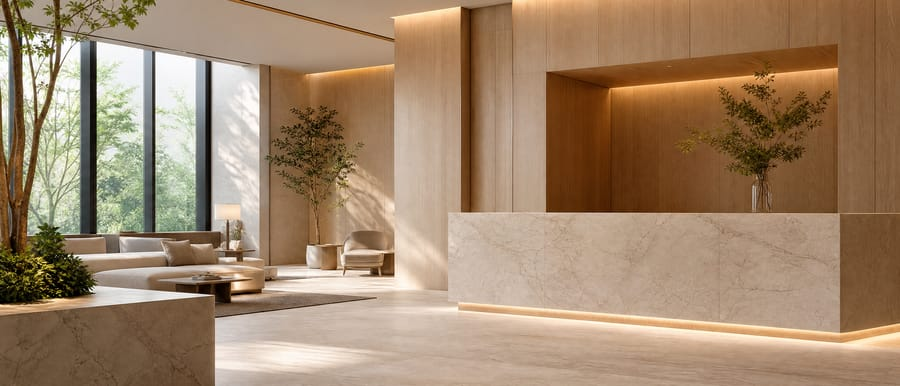
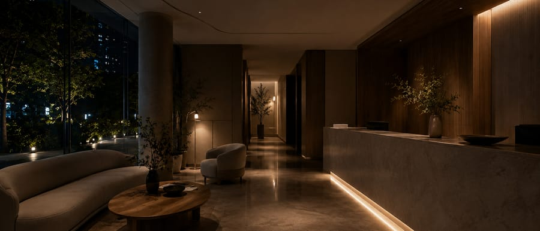

ClinicOS 適合什麼樣的診所？
每一間診所都有不同的工作方式。我們會先了解您的現況，再一起判斷是否適合。
Chapter 08
Together
下一段路，
我們一起走。
在決定之前，您可能還有一些問題。很正常。
我們希望先把它們一個一個說清楚。

Understand
在決定之前，先把問題說清楚。
每一間診所都有不同的工作方式。我們會先了解您的現況，再一起判斷是否適合。
不用。ClinicOS 可以從每天最重要的一件事開始，不需要一次改變所有流程。
每一間診所都不同。我們會先了解目前的做法，再一起討論最適合的方式。
可以。
ClinicOS 不要求診所一次改變全部。
可以先從每天最需要改善的地方開始，等工作逐漸熟悉，再一步一步延伸到其他模組。
重要的不是一次完成，而是每一步都真正接得下去。

Begin
真正的開始，比想像中小一點。
不用。如果您只是想了解，也歡迎先聯絡我們。
每間診所的流程與資料狀況都不同，所以沒有一個固定答案。
我們會先了解目前的工作方式，再依實際需求安排導入順序。
導入不是讓診所停下來等待，而是在不影響日常工作的前提下，逐步完成。

Alongside
交付不是結束，是開始。
真正需要留下來的，不是新的操作方式，而是共同工作的方式。
遇到問題時，您可以直接找到 ClinicOS 團隊。
我們不希望問題只停在客服紀錄裡，而是會先理解當下發生了什麼，再一起找到能真正延續工作的處理方式。
會。
診所每天面對的工作會改變，ClinicOS 也會持續調整。
更新不是為了增加更多功能，而是讓系統繼續符合診所真正的工作方式，並陪伴日常持續往前。
好的系統，
不是改變工作的方式。
而是讓每天的工作，
更自然。
Growth
規模會變，做法不必重來。
可以。ClinicOS 從一開始，就以陪伴診所一起成長為前提。
當診所從一個據點走向更多據點，原本累積的資料、流程與管理方式，都應該能繼續延伸。
ClinicOS 的方向，是讓各院所保有自己的日常，也讓管理者能在適當權限下，看見整體營運。

Together
最後想說的，其實不是功能。
如果現在還沒有準備好，也沒關係。先聊聊，比急著決定更重要。
每一間診所，都有自己的日常。所以，我們更想先了解您。而不是告訴您，別人怎麼做。
如果最後不適合，我們也會誠實地說。
我們希望提供的，是誠實的建議，而不是勉強的選擇。